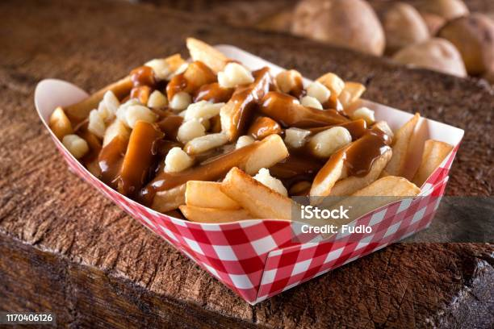
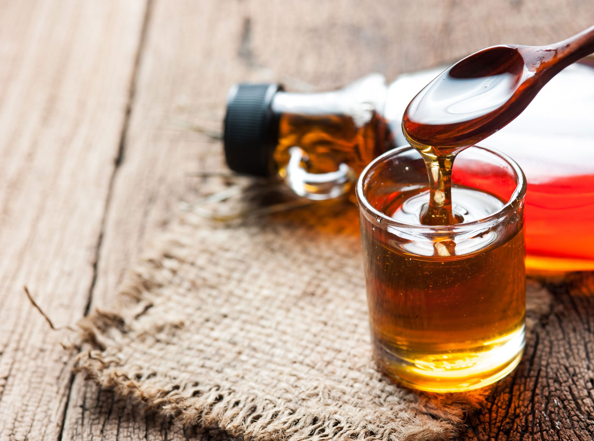

Poutine
Originating from Quebec, Poutine is a beloved comfort food consisting of crispy fries topped with cheese curds and covered in a rich, savory gravy. Often enjoyed as a late-night snack, it has become a symbol of Canadian culinary indulgence.
Maple Syrup
Canada is the world's largest producer of maple syrup, a sweet condiment made from the sap of maple trees. This liquid gold is a staple in Canadian kitchens, used in everything from breakfast pancakes to glazing for meats and vegetables.
